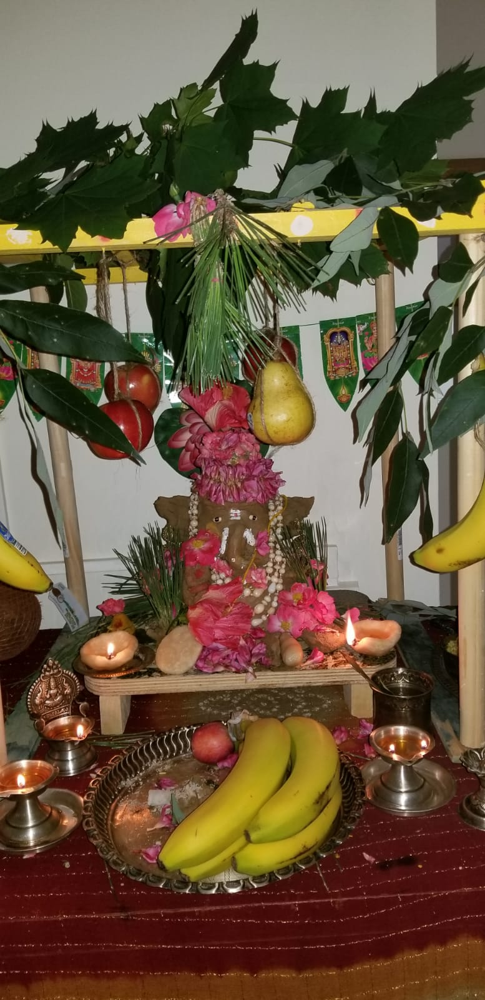
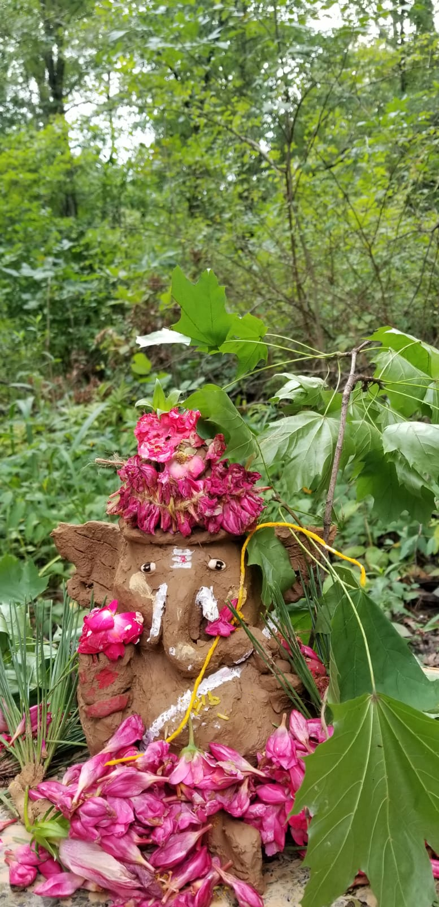

How Ganesha got his Elephant Head
One day, Parvati, Shiva`s wife posted Nandi, Shiva`s attendent to not let anyone to come inside the house while she was bathing. However, when Shiva arrived at his house, Nandi allowed him to come in because he was his master. When Parvati learned this, she wa furious since she told Nandi to not allow anyone to come inside while she was taking her bath. "No one listens to me. They only to Shiva I must create a gana that will swear allegiance to me" She thought. And she did just that. She used the turmeric paste from her own body and created a boy. She breathed life into the boy and the boy moved. Parvati told th boy to stand at the post and not allow anyone in unless she gave him permission to. She gave him a staff as a weapon and th boy stood there. A little later, Shiva arrived again and stopped wondering “Who is that boy. Why is he standing in front of my house.”
Shiva stopped wondering and walked up to his house, but was blocked by the boy.
“Boy, let me in!” Shiva said furiously as he was in a hurry. But the boy didn’t let him and hit Shiva. Shiva went to his ganas and told them to get rid of the boy. The ganas would, but they first asked him who he was as they were curious to know. When they learned that he was Parvati’s son, they rushed back to Shiva and told. Shiva thought for a minute, then told them to throw him out the boy. The ganas rushed at the boy, but were thrashed and the remaining rushed back to Shiva. When Shiva heard this, he decided he had to kill him in his own hands. When they arrived at the boy, Shiva threw his trident and severed the boys head. The ganas danced in joy as Shiva stood in shock. “Alas, he was Parvati’s son, that made him my son to.”
When Parvati learned her son had died unfairly, she flew into a rage and created hundreds and thousands of Shakthis to eat the ganas. The Shakthis did so and ate most of the ganas. Vishnu and Brahma went to Parvati to ask for peace and she agreed as long as her son was brought back to life and prayed as a god. They told Shiva and he told them to bring back the head of the first creature sleeping in the north direction. Vishnu and Brahma went North and found a one-tusked elephant sleeping in the North direction. They severed the head of the elephant and brought the head to Shiva who placed the head of the elephant on the boys shoulder. The boy sat up and Vishnu and Brahma brought him to Parvati. Shiva held a ceremony for the boy and named him Vigneshwara, the destroyer of obstacles and Ganesha as the leader of the Ganas.
What We did For Ganesha Chaturthi.
Our Ganesha Statue
This year for Ganesha Chaturthi, the day in which Parvati cursed the moon and anyone who looked at it would be blamed for something they didn’t do. When Ganesha came back to life, she reduced the curse to one day, people cant look at the moon unless they pray to Ganesha and chant. My family and I went to the riverbank and brought back clay/mud and made a Ganesha statue.After we prayed to our Ganesha, we went to a friends house and prayed to their Ganesha again. The next day, we went to the river and prayed to Ganesha and placed him in the water and said “ Good-Bye” to him.
Ganesha in the forest
This year for Ganesha Chaturthi, the day in which Parvati cursed the moon and anyone who looked at it would be blamed for something they didn’t do. When Ganesha came back to life, she reduced the curse to one day, people cant look at the moon unless they pray to Ganesha and chant. My family and I went to the riverbank and brought back clay/mud and made a Ganesha statue.After we prayed to our Ganesha, we went to a friends house and prayed to their Ganesha again. The next day, we went to the river and prayed to Ganesha and placed him in the water and said “ Good-Bye” to him.